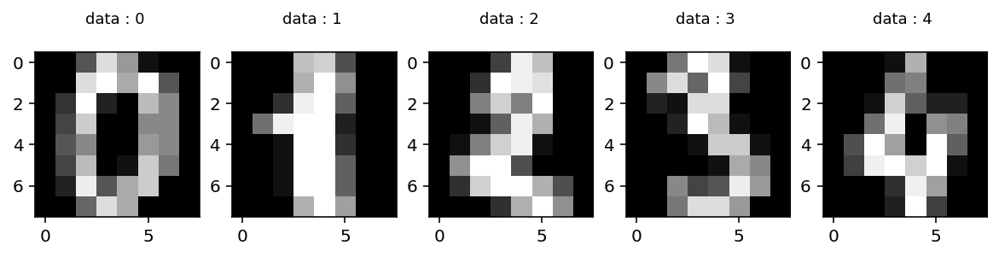
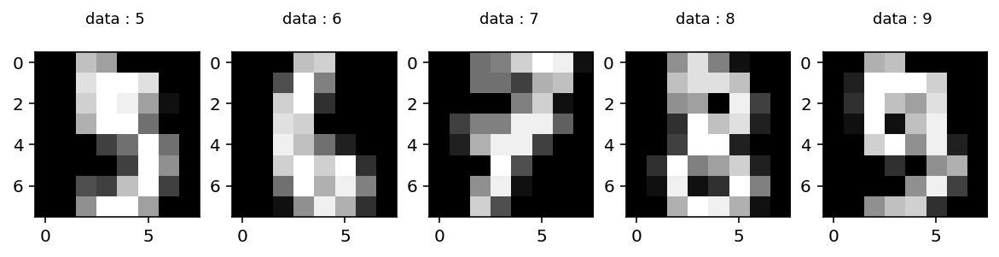
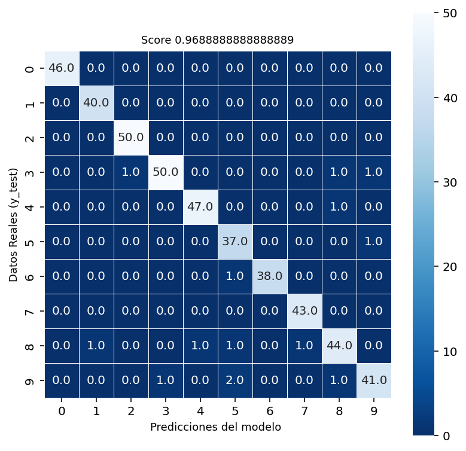

import matplotlib.pyplot as plt
from sklearn.datasets import load_digits
digits = load_digits()Regresión y clasificación en Machine Learning
Machine Learning es un subcampo de las ciencias de la computación y la inteligencia artificial, que se sirve de algoritmos que permiten a las máquinas aprender imitando la forma en la que los seres humanos desarrollan acciones.
Los métodos de clasificación y regresión se encuentran dentro de una rama del Machine Learning conocida como aprendizaje automático supervisado. Te explicamos qué son y en qué se diferencian.
Grupos de algoritmos en Machine Learning
El Machine Learning se fundamenta en cuatro grandes grupos de algoritmos:
- Machine Learning supervisado
- Machine Learning no supervisado
- Machine Learning semisupervisado
- Machine Learning por refuerzo
Machine Learning supervisado
El Machine Learning/aprendizaje supervisado trabaja con datos etiquetados, es decir, datos para los que ya conoce la respuesta de destino. En base a un histórico, trata de buscar patrones relacionándolos con un campo especial, llamado objetivo, dadas unas variables de entrada.
A través de dicho histórico de datos, el algoritmo puede aprender a asignar una etiqueta de salida o función que le permita predecir el atributo objetivo para una nueva acción.
El aprendizaje supervisado se utiliza en dos tipos de problemas: clasificación (por ejemplo, detección de fraude) y regresión (por ejemplo, predicciones meteorológicas).
Machine Learning no supervisado
El Machine Learning/aprendizaje no supervisado está formado por datos de entrada, pero no se conocen los datos de salida, es decir, no cuenta con un conjunto de datos etiquetados para las pruebas de entrenamiento. Este modelo suele utilizarse como método exploratorio o de análisis.
Los usos más comunes de este tipo de aprendizaje son: problemas de clustering, agrupamientos de co-ocurrencia o profiling de datos.
Machine Learning semisupervisado
El Machine Learning/aprendizaje semisupervisado es una técnica de aprendizaje automático que utiliza datos de entrenamiento tanto etiquetados como no etiquetados.
Machine Learning por refuerzo
Por último, el Machine Learning/aprendizaje por refuerzo se basa en un sistema de prueba y error. Su objetivo principal es generar un aprendizaje que permita obtener una recompensa específica a medio-largo plazo.
Técnicas de clasificación
Las técnicas de clasificación son una parte esencial de Machine Learning, ya que aproximadamente el 70% de los problemas son de clasificación. Hay muchos algoritmos de clasificación, pero la Regresión Logística es común y es un método de regresión útil para resolver problemas de clasificación binaria.
La Regresión Logística
La Regresión Logística es un método estadístico para predecir clases binarias. El resultado o variable objetivo es de naturaleza dicotómica. Dicotómica significa que solo hay dos clases posibles. Por ejemplo, se puede utilizar para problemas de detección de cáncer o calcular la probabilidad de que ocurra un evento.
La Regresión Logística es uno de los algoritmos de Machine Learning más simples y más utilizados para la clasificación de dos clases. Es fácil de implementar y se puede usar como línea de base para cualquier problema de clasificación binaria. La Regresión Logística describe y estima la relación entre una variable binaria dependiente y las variables independientes.
En general, este algoritmo se puede utilizar para varios problemas de clasificación, como la detección de spam, predicción de la diabetes, si un cliente determinado comprará un producto en particular o si se irá con la competencia, hay muchos más ejemplos en donde se puede aplicar este algoritmo.
Por su parte la Regresión Logística lleva el nombre de la función utilizada en el núcleo del método, la función logística es también llamada función Sigmoide. Esta función es una curva en forma de S que puede tomar cualquier número de valor real y asignar a un valor entre 0 y 1.
Si la curva va a infinito positivo la predicción se convertirá en 1, y si la curva pasa el infinito negativo, la predicción se convertirá en 0. Si la salida de la función Sigmoide es mayor que 0.5, podemos clasificar el resultado como 1 o SI, y si es menor que 0.5 podemos clasificarlo como 0 o NO. Por su parte si el resultado es 0.75, podemos decir en términos de probabilidad como, hay un 75% de probabilidades de que el paciente sufra cáncer.
Pero veamos este algoritmo de manera matemática, la ecuación de Regresión Lineal es está:
Donde “y” es la variable dependiente y “x1, x2, …” son variables independientes o explicativas.
Por su parte, la ecuación de la función Sigmoide es la siguiente:
Entonces si aplicamos la función Sigmoide en la Regresión Lineal nos quedaría algo como esto:
\[ p=\frac{1}{1+e^{-\left(a_{1} x_{1}+a_{2} x_{2}+a_{n} x_{n}+b\right)}} \]
Diferencias entre Regresión Lineal y Regresión Logística
La Regresión Lineal proporciona una salida continua, pero la Regresión Logística proporciona una salida discreta. Un ejemplo de una salida continua es conocer el porcentaje de probabilidad de lluvia o el precio de una acción. Un ejemplo de una salida discreta, por su parte, es conocer si va a llover o no, o si el precio de una acción subirá o no.
Tipos de Regresión Logística
- Regresión Logística Binaria: la variable objetivo tiene solo dos resultados posible, Llueve o NO Llueve, Sube o Baja.
- Regresión Logística Multinomial: la variable objetivo tiene tres o más categorías nominales, como predecir el tipo de vino.
- Regresión Logística Ordinal: la variable objetivo tiene tres o más categorías ordinales, como clasificar un restaurante o un producto del 1 al 5.
En resumen la Regresión Logística es el algoritmo de Machine Learning más famoso después de la Regresión Lineal, es un algoritmo simple que se puede utilizar para tareas de clasificación binarias y multivariadas.
Ejemplo de Regresion Logistica usando Python - Sklearn
En esta seccion explicaremos la parte práctica del algoritmo de Regresión Logística, en donde desarrollaremos un modelo para predecir el numero en una imagen de 8x8.
Para este análisis vamos a utilizar uno de los dataset que se encuentra disponible en la librería scikit-learn y es el correspondiente a digits
Si no lo sabias dentro de la librería de Python scikit-learn dispones de varios dataset, con los que puedes practicar tus conocimientos de Machine Learning. Puedes encontrar tanto para problemas de regresión, como para problemas de clasificación.
Codigo y Resultados Python:
A continuacion comentamos cada seccion del codigo de python
Primero cargamos los modulos y dataset que usara para el analisis.
Se imprime un descriptivo con mas detalle acerca del dataset digits
print(digits.DESCR).. _digits_dataset:
Optical recognition of handwritten digits dataset
--------------------------------------------------
**Data Set Characteristics:**
:Number of Instances: 1797
:Number of Attributes: 64
:Attribute Information: 8x8 image of integer pixels in the range 0..16.
:Missing Attribute Values: None
:Creator: E. Alpaydin (alpaydin '@' boun.edu.tr)
:Date: July; 1998
This is a copy of the test set of the UCI ML hand-written digits datasets
https://archive.ics.uci.edu/ml/datasets/Optical+Recognition+of+Handwritten+Digits
The data set contains images of hand-written digits: 10 classes where
each class refers to a digit.
Preprocessing programs made available by NIST were used to extract
normalized bitmaps of handwritten digits from a preprinted form. From a
total of 43 people, 30 contributed to the training set and different 13
to the test set. 32x32 bitmaps are divided into nonoverlapping blocks of
4x4 and the number of on pixels are counted in each block. This generates
an input matrix of 8x8 where each element is an integer in the range
0..16. This reduces dimensionality and gives invariance to small
distortions.
For info on NIST preprocessing routines, see M. D. Garris, J. L. Blue, G.
T. Candela, D. L. Dimmick, J. Geist, P. J. Grother, S. A. Janet, and C.
L. Wilson, NIST Form-Based Handprint Recognition System, NISTIR 5469,
1994.
.. topic:: References
- C. Kaynak (1995) Methods of Combining Multiple Classifiers and Their
Applications to Handwritten Digit Recognition, MSc Thesis, Institute of
Graduate Studies in Science and Engineering, Bogazici University.
- E. Alpaydin, C. Kaynak (1998) Cascading Classifiers, Kybernetika.
- Ken Tang and Ponnuthurai N. Suganthan and Xi Yao and A. Kai Qin.
Linear dimensionalityreduction using relevance weighted LDA. School of
Electrical and Electronic Engineering Nanyang Technological University.
2005.
- Claudio Gentile. A New Approximate Maximal Margin Classification
Algorithm. NIPS. 2000.
Visualicemos algunas componentes de nuestra data. Veamos las primeras 5 componentes de digits.images y digits.target.
plt.figure(figsize = (10,2))
for i in range(0,5):
plt.subplot(1,5, i+1)
plt.imshow(digits.images[i], cmap = plt.cm.gray)
plt.title("data : %i \n" %digits.target[i], fontsize = 9)
Veamos las componentes 5 a 9 de digits.images y digits.target.
plt.figure(figsize = (10,2))
for i in range(0,5):
j=int(i+5)
plt.subplot(1,5, i+1)
plt.imshow(digits.images[j], cmap = plt.cm.gray)
plt.title("data : %i \n" %digits.target[j], fontsize = 9)
Ahora vamos a proceder a definir las variables de “x” y “y” que vamos emplear en nuestro modelo. Para “x” vamos a utilizar todas las variables que se encuentran dentro de digits.data, Por su parte, “y” será igual a los datos correspondientes a digits.target.
# datos numericos de la imagen, en un formato lineal,como 64 variables independientes
digits["data"][0]array([ 0., 0., 5., 13., 9., 1., 0., 0., 0., 0., 13., 15., 10.,
15., 5., 0., 0., 3., 15., 2., 0., 11., 8., 0., 0., 4.,
12., 0., 0., 8., 8., 0., 0., 5., 8., 0., 0., 9., 8.,
0., 0., 4., 11., 0., 1., 12., 7., 0., 0., 2., 14., 5.,
10., 12., 0., 0., 0., 0., 6., 13., 10., 0., 0., 0.])# resultado , variable objetivo , label , este seria mi variable dependiente
digits.target[0]0Definido “x” y “y” ya podemos realizar la separación correspondiente a los datos de prueba y entrenamiento para ello importamos la respectiva librería y procedemos a utilizar train_test_split para separar los datos.
Para la separación de los datos, vamos a tomar un 25% de los mismos para utilizarlos como prueba una vez que hayamos obtenido el modelo.
# Construimos el dataset train y test
from sklearn.model_selection import train_test_split
x_train, x_test, y_train, y_test = train_test_split(digits.data, digits.target,
test_size=0.25,
random_state= 666)Ya en este momento tenemos nuestros datos listos para empezar a construir el modelo.
Lo primero que debemos hacer es importar LogisticRegression que se encuentra dentro de la librería linear_model, y a su vez definimos el algoritmo “logistic1” .
#Defino el algoritmo "logistic1" a utilizar
from sklearn.linear_model import LogisticRegression
logistic1 = LogisticRegression(max_iter = 2000,
verbose = 1,
tol = 1e-6)Seguidamente entrenamos el modelo utilizando la instrucción fit y los datos tanto de “X” como de “y” de entrenamiento.
#Entrenando el modelo
logistic1.fit(x_train, y_train)[Parallel(n_jobs=1)]: Using backend SequentialBackend with 1 concurrent workers.C:\Python\Python310\lib\site-packages\sklearn\linear_model\_logistic.py:444: ConvergenceWarning:
lbfgs failed to converge (status=1):
STOP: TOTAL NO. of ITERATIONS REACHED LIMIT.
Increase the number of iterations (max_iter) or scale the data as shown in:
https://scikit-learn.org/stable/modules/preprocessing.html
Please also refer to the documentation for alternative solver options:
https://scikit-learn.org/stable/modules/linear_model.html#logistic-regression
[Parallel(n_jobs=1)]: Done 1 out of 1 | elapsed: 5.0s finishedLogisticRegression(max_iter=2000, tol=1e-06, verbose=1)In a Jupyter environment, please rerun this cell to show the HTML representation or trust the notebook.
On GitHub, the HTML representation is unable to render, please try loading this page with nbviewer.org.
LogisticRegression(max_iter=2000, tol=1e-06, verbose=1)
Y finalmente realizamos una predicción, utilizando la instrucción predict y los datos de prueba.
# Hagamos la prediccion para todos los datos de prueba
predictions = logistic1.predict(x_test)Calculamos la precisión del algoritmo “logistic1”
# score
score = logistic1.score(x_test, y_test)
score0.9688888888888889Ademas calculamos y visualizamos la Matriz de Confusion.
# Matriz de confusion
from sklearn import metrics
cm = metrics.confusion_matrix(y_test, predictions)
cmarray([[46, 0, 0, 0, 0, 0, 0, 0, 0, 0],
[ 0, 40, 0, 0, 0, 0, 0, 0, 0, 0],
[ 0, 0, 50, 0, 0, 0, 0, 0, 0, 0],
[ 0, 0, 1, 50, 0, 0, 0, 0, 1, 1],
[ 0, 0, 0, 0, 47, 0, 0, 0, 1, 0],
[ 0, 0, 0, 0, 0, 37, 0, 0, 0, 1],
[ 0, 0, 0, 0, 0, 1, 38, 0, 0, 0],
[ 0, 0, 0, 0, 0, 0, 0, 43, 0, 0],
[ 0, 1, 0, 0, 1, 1, 0, 1, 44, 0],
[ 0, 0, 0, 1, 0, 2, 0, 0, 1, 41]], dtype=int64)El resultado del score y Matriz de confusion confirman que el modelo obtenido es bueno.
# Visualicemos la matriz de confusion
import seaborn as sns
plt.figure(figsize = (6.5,6.5))
sns.heatmap(cm, annot = True, fmt = ".1f",
linewidths=0.5, square = True,
cmap = "Blues_r")
plt.ylabel("Datos Reales (y_test)", fontsize = 9)
plt.xlabel("Predicciones del modelo ", fontsize = 9)
plt.title("Score {0}".format(score), fontsize = 9)Text(0.5, 1.0, 'Score 0.9688888888888889')